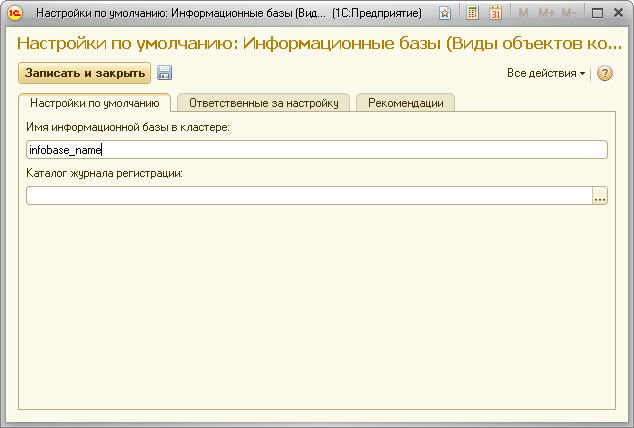
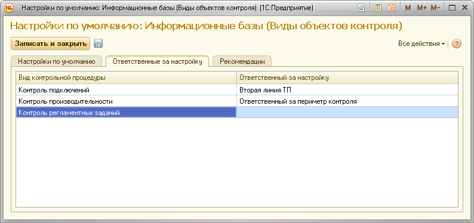

Данная форма поможет вам указать настройки, которые будут использоваться как настройки по умолчанию для всех информационных баз, регистрируемых в ЦКК.
Во вкладке "Настройки по умолчанию" можно указать имя информационной базы в кластере и путь к каталогу журнала регистрации.

Во вкладке "Ответственные за настройку" вы можете указать роли пользователей по умолчанию, ответственных за выполнения задач по настройке контрольных процедур.
